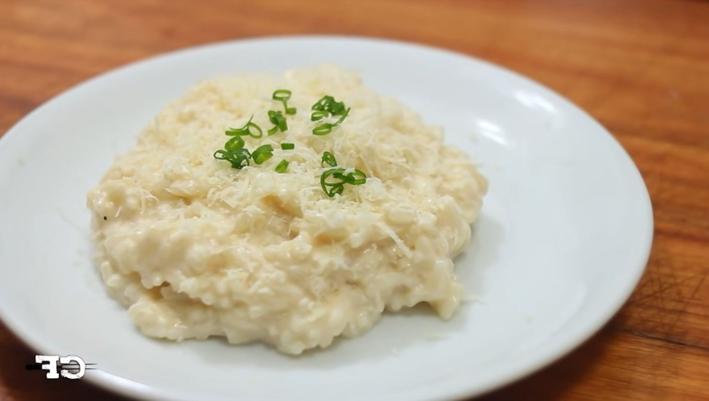

Arroz a Piamontese

Descrição
Arroz cremoso perfeito para o almoço de domingo
Ingredientes
- 2 canecas de arroz lavado
- 1 colher de alho
- 1 lata de champignon
- 1 lata de creme de leite
- 1/2 colher de óleo
- sal a gosto
- 100g de queijo mussarela
Modo de Preparo
- Frite o arroz no óleo e alho até ficar solto como uma farofa.
- Coloque água dois dedos acima do arroz e tampe até secar.
- espeje o creme de leite, a mussarela e o champignon
- deixe no fogo até a mussarela derreter e o arroz ficar como um risoto
Voltar ao Início